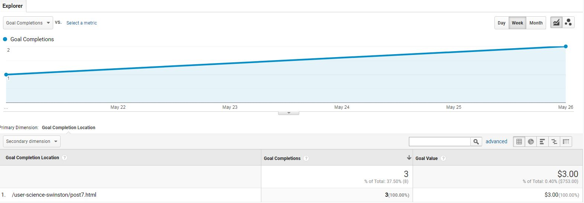

Goooooaaaals!
We discovered last week how easy it was to add a data tracking system to our websites using Google Analytics(GA). This week I'll share how we can measure a website for performance in specific interactions. In GA terms, a goal is a specific interaction and a conversion is when a visitor completes that interaction. To begin using this tool, all you have to do is set a goal or multiple goals for your website. GA has an easy way to integrate them and it will track your site's progress toward those goals. We just love GA.
Destination and Events
As I stated in last week's blog post, Google Analytics is a tool with vast capabilities. Goals are one them. Again, goals are specific user interactions on your site, when a visitor performs your specified interaction, GA records that as a conversion, meaning that goal has been reached. The interactions can be anything from button clicks, form submissions, file downloads, etc. There are four different goal types to select from:
I created two goal types, a destination and an event. The set-up was easy. For the destination goal, I used the available GA Share/social connect template. I added the destination URL of my Blog Post 7 to my Facebook wall and encouraged friends to go to it. For each conversion, I assigned a dollar value of $1 USD. I also added the Funnel option of tracking to see how visitors arrived at the conversion. In the funnel option I added the Step 1 entry way of the Index page, although this step is not required.
The event goal tracks the number of clicks on the Subscribe! button I added on the Index page of my User Science Journal. I used the GA Submission template, which was meant for form submissions, but it served my purpose just as well. When visitors click on the Subscribe! button, it opens up a survey form for them to enter their email. The set-up required event conditions, I assigned attributes to those conditions. For each event conversion, I gave it a $150 USD value.
I added the following gtag codes on the Index page:
The codes placed the Subscribe! button with its event conditions to the Index page:
Results
To encourage traffic to the site, I posted another announcement on my Facebook wall. The results were great, considering I had expected just a one or two clicks. The overview showed, 8 completions total, 5 clicks on the Event goal and 3 clicks on the destination page with a Conversion Rate of 66.67% and 11.11% Abandonment Rate. The completions showed a total Goal Value of $753.00:Details on the each goals are below:


The Multi-channel Funnels overview is also interesting, because I had expected most visitors to arrive via my Facebook post. However, as shown below, 87.50% of conversions were from direct and only 12.50% were from social:
The Goal Flow visualization for the Event Goal showed, 3 entered through Facebook and 2 were direct:
The Funnel visualization for the Destination Goal showed it was completed in 3 sessions with a 75% conversion rate: